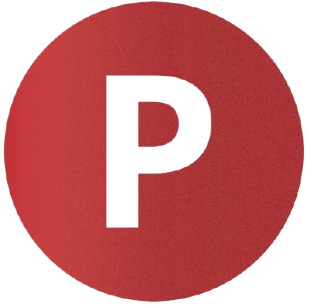

Solusi cerdas untuk monitoring tanah dan rekomendasi tanaman yang paling cocok untuk tanah anda!
Update terakhir: --
Nitrogen (N)

Fosfor (P)
Kalium (K)
Suhu
Electrical Conductivity (EC)
Kelembaban
pH tanah
Tekan tombol Start pada aplikasi untuk memulai monitoring
Sensor unit akan membaca data parameter tanah secara realtime
Tekan Stop untuk mengakhiri pembacaan data parameter
Lihat hasil rekomendasi tanaman anda disini!
Tekan tombol Start pada aplikasi untuk memulai Rekomendasi tanaman
Sensor unit akan membaca data parameter tanah secara realtime dan menentukan hasil rekomendasi tanaman yang sesuai
Tekan Stop untuk mengakhiri proses rekomendasi
Total Rekomendasi
| No | N | P | K | Suhu | pH | Kelembaban | EC | Tanaman | Aksi |
|---|
Nitrogen (N)
Fosfor (P)
Kalium (K)
Suhu
pH
Kelembaban
EC